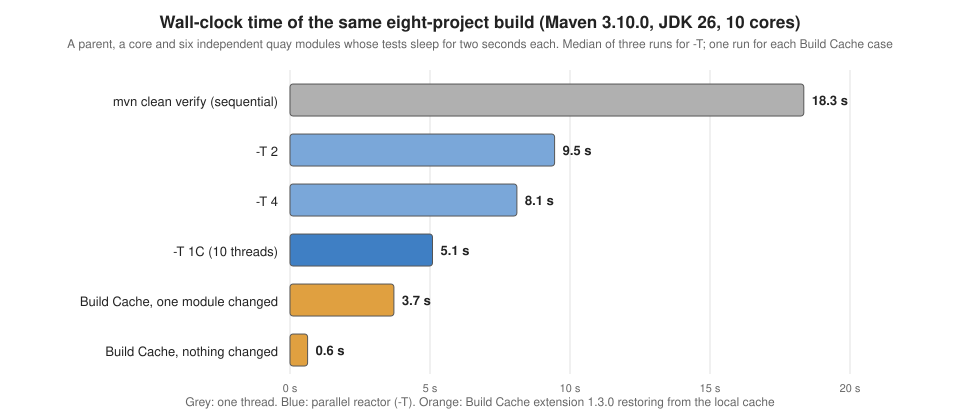

Build Performance: Cache, Parallel Builds & mvnd
|
This content was generated with the assistance of AI and should be verified against the official documentation before being relied on in production. |
This page is written against Apache Maven 3.10.0 and the Apache Maven Build Cache Extension 1.3.0. Every example that is not marked
"not run here" was run on JDK 26 on 2026-10-16; Maven 3.9.16 and Maven 4.0.0-rc-7 (a release candidate) were run wherever the page
names them. All builds used a scratch local repository and a scratch cache directory, so nothing was written into the real ones.
Absolute paths in console output were shortened to ... and log lines that were left out are marked. The Maven Daemon (mvnd) is
not installed on the machine that produced the examples, and it was not downloaded for this page: everything about mvnd is taken
from its documentation and is marked "not run here". Plugin versions are the stable releases found on Maven Central on 2026-10-16.
A Maven build is slow for a small number of reasons: it runs one project after another, it repeats work whose inputs did not change,
and it starts a new JVM, loads Maven and its plugins and warms the JIT compiler for every command. Each of the three tools of this
page removes one of these costs. Parallel builds (-T) overlap independent modules. The Build Cache Extension skips work whose inputs
are identical to a previous run. The Maven Daemon (and the Maven 4 shell) keeps the JVM and the plugins alive between commands. They
combine, but each one has conditions under which it does nothing or does harm, and those conditions are the subject of this page.
The reactor itself, its ordering rules and the selection flags (-pl, -am, -rf) are on
Multi-Module Builds & the Reactor
and are not repeated. The .mvn directory and MAVEN_ARGS are on
Configuring Maven.

The example build
The examples use a scratch project named harbor. It is deliberately shaped for the experiment, not like a real application: a parent
POM, a harbor-core module with one record, and six independent modules harbor-quay-1 to harbor-quay-6 that depend on the core.
Each quay has one JUnit test that sleeps for two seconds, which stands in for a slow integration-style test. The reactor therefore has
the shape that parallel builds like best: one module that everything waits for, then six modules that wait for nothing else.
harbor/ pom.xml io.harbor:harbor-parent pom, parent and aggregator
harbor-core/ pom.xml io.harbor:harbor-core jar, no dependencies
harbor-quay-1/ ... 6 pom.xml io.harbor:harbor-quay-N jar, depend on harbor-core, one 2 s test eachThe parent pins the plugin versions (compiler 3.16.0, surefire 3.6.0, jar 3.5.1, resources 3.5.0, install 3.2.0), sets
maven.compiler.release to 21 and project.build.outputTimestamp, and manages the harbor-core version. A quay is a few lines:
<!-- harbor-quay-3/pom.xml -->
<project xmlns="http://maven.apache.org/POM/4.0.0">
<modelVersion>4.0.0</modelVersion>
<parent>
<groupId>io.harbor</groupId>
<artifactId>harbor-parent</artifactId>
<version>1.0.0</version>
</parent>
<artifactId>harbor-quay-3</artifactId>
<dependencies>
<dependency>
<groupId>io.harbor</groupId>
<artifactId>harbor-core</artifactId>
</dependency>
<dependency>
<groupId>org.junit.jupiter</groupId>
<artifactId>junit-jupiter</artifactId>
<version>${junit.version}</version>
<scope>test</scope>
</dependency>
</dependencies>
</project>// harbor-quay-3/src/test/java/io/harbor/quay3/QuayTest.java
class QuayTest {
@Test
void berthFitsAFishingBoat() throws InterruptedException {
Thread.sleep(2000); // stands in for a slow integration-style test
assertTrue(Quay.berth().fits(30));
}
}The harbor project is this page’s own lab setup, not an example from the Maven documentation.
The baseline is mvn clean verify on Maven 3.10.0: the six tests run one after the other and the build takes about 17 to 19 seconds.
The Reactor Summary says where the time goes: about two and a half seconds for each quay and almost nothing for the others.
Parallel builds with -T
-T (long form --threads) tells the reactor to build several projects at the same time. The argument is either a number of threads
or a multiplier of the number of CPU cores written with a trailing C:
| Argument | Meaning |
|---|---|
|
Four threads. |
|
One thread per core. On the 10-core scratch machine that is ten threads. |
|
A fractional multiplier of the number of cores. |
|
One thread: Maven uses the ordinary single-threaded builder and prints no |
|
The long form. All five spellings above gave |
|
An error, |
Any value that is not a number fails before the build starts. Maven 3.10.0 and 3.9.16 print the message below; Maven 4.0.0-rc-7 prints the
same error with the text Supported are int and float values ending with C.:
[ERROR] Error executing Maven.
[ERROR] Invalid threads value: 'abc'. Supported are integer values.What the reactor does with the threads
The reactor graph decides what can run in parallel: a project starts as soon as every project it depends on has finished, and a free thread is available. In harbor the parent comes first, then the core, and after that the six quays are independent. The Maven guide on parallel builds describes the graph in levels: level 0 first, then a fan-out of everything whose dependencies are done. A thread count larger than the width of the graph buys nothing, and a count smaller than the width forces the projects to run in waves.
On Maven 3.10.0, mvn -T 1C verify printed the marker line that confirms that the threaded builder is in use, and the Building lines
show the starts. The order of the start lines is no longer the reactor order, the [n/m] numbers are the positions in the sorted
reactor and not the order of completion, and the test lines of different modules are interleaved:
[INFO] Using the MultiThreadedBuilder implementation with a thread count of 10
[INFO] Building harbor-parent 1.0.0 [1/8]
[INFO] Building harbor-core 1.0.0 [2/8]
[INFO] Building harbor-quay-2 1.0.0 [3/8]
[INFO] Building harbor-quay-1 1.0.0 [4/8]
[INFO] Building harbor-quay-3 1.0.0 [5/8]
[INFO] Building harbor-quay-4 1.0.0 [6/8]
[INFO] Building harbor-quay-6 1.0.0 [8/8]
[INFO] Building harbor-quay-5 1.0.0 [7/8]
[INFO] Tests run: 1, Failures: 0, Errors: 0, Skipped: 0, Time elapsed: 2.063 s -- in io.harbor.quay1.QuayTest
[INFO] Tests run: 1, Failures: 0, Errors: 0, Skipped: 0, Time elapsed: 2.052 s -- in io.harbor.quay5.QuayTest
...
[INFO] BUILD SUCCESS
[INFO] Total time: 3.934 s (Wall Clock)(Lines in between were left out where the ellipsis is.) The line of the total time ends with (Wall Clock) in the threaded builder
because the sum of the project times would be larger than the elapsed time. With -T 4 only four quays can be in progress, so
the last two start when threads become free, and the build takes about two waves of two seconds:
[INFO] Using the MultiThreadedBuilder implementation with a thread count of 4
[INFO] Building harbor-parent 1.0.0 [1/8]
[INFO] Building harbor-core 1.0.0 [2/8]
[INFO] Building harbor-quay-3 1.0.0 [3/8]
[INFO] Building harbor-quay-1 1.0.0 [4/8]
[INFO] Building harbor-quay-2 1.0.0 [5/8]
[INFO] Building harbor-quay-4 1.0.0 [6/8]
[INFO] Building harbor-quay-5 1.0.0 [7/8]
[INFO] Building harbor-quay-6 1.0.0 [8/8]
...
[INFO] Total time: 6.325 s (Wall Clock)Source: Parallel builds in Maven 3
Measured times
Each cell is one run of mvn -B -o clean verify, with the mode in the first column, on a quiet 10-core machine with a warm local
repository. Total time is the figure that Maven prints; the spread of three runs shows how noisy the figure is on a laptop.
| Mode | Maven 3.10.0 | Maven 3.9.16 | Maven 4.0.0-rc-7 |
|---|---|---|---|
sequential |
17.340 s, 18.349 s, 19.360 s |
16.775 s, 17.040 s |
17.474 s, 17.469 s |
|
9.310 s, 9.451 s, 9.484 s |
not run |
not run |
|
7.501 s, 8.194 s, 8.102 s |
8.370 s, 7.948 s |
7.769 s, 6.850 s |
|
4.768 s, 6.295 s, 5.091 s |
4.107 s, 4.275 s |
4.650 s, 4.077 s |
The speed-up is real here (from about 18 s to about 5 s) because the shape is ideal: six independent modules and a slow test in each.
A different shape gives a different result. In the tidepool build of
the reactor page, a chain of three modules with fast tests took
3.373 s sequentially and 4.293 s with -T 1C, because starting the threads cost more than the one independent module saved. The Maven
wiki says that a 20 to 50 percent improvement is common, which is a more usual figure than the factor of three above, and that putting
all tests into one module makes parallel builds less useful, unless the tests themselves run in parallel (the
Surefire page covers parallel test execution and forkCount). The rules of
thumb that follow from the graph are:
-
The build can be no faster than its longest chain of dependent modules (the critical path). Splitting a long chain can help more than adding threads.
-
Threads beyond the width of the graph are wasted. Harbor has at most six projects that can run together, so more than six threads change nothing.
-
A module with most of the work in it (a single module with all the tests) makes the other threads idle.
-
Parallel builds multiply memory use, because several compilers, test JVMs and plugin classloaders live at once.
Making it permanent
Typing -T 1C every time is not necessary. Maven reads default arguments from several places, and all of them worked on harbor:
| Place | Example and result |
|---|---|
|
A file with the lines |
|
|
The command line |
Always wins over the others for the same option. |
The details of these files, and what happens when the same option is set twice, are on
Configuring Maven. Committing .mvn/maven.config with -T1C makes every
developer and the CI server build in parallel, which is convenient and also forces every plugin of the build to be thread-safe, so do it
only after a clean parallel run.
Thread safety
Two kinds of code run concurrently in a parallel build: Maven core, which is thread safe and well behaved according to the Maven
wiki, and the plugins. A Mojo that is safe to run in several modules at once says so with @ThreadSafe on its class (the annotation
is covered on Writing Plugins); Maven 3 was meant to warn about plugins that
are not marked. I tried maven-antrun-plugin 1.8 with -T 2 on Maven 3.10.0, 3.9.16 and 4.0.0-rc-7 and did not get a warning from
any of them, which is consistent with the wiki list that names the Antrun plugin as thread safe since 1.4. I did not run a build with
a plugin that is really not thread safe, so I have no output for the warning or for a failure, and I do not claim that
Maven prints one.
What the wiki does say, and what matters in practice:
-
The documented incompatibilities are old: Surefire with
forkModeset tonever, the Modello plugin before 1.4 and the archiver-based plugins (EAR, EJB, JAR, WAR) before the fixes. All of them were fixed long ago; if you are on the plugin versions of this site you will not meet them. -
The libraries underneath plugins can be the problem. Static
DateFormatorNumberFormatfields, singleton components and old versions of plexus-utils and plexus-archiver were the known causes. -
Files and ports are still singletons. Two modules that start a server on the same port, or write the same temporary file, collide whatever the plugin says. Tests that need a fixed port are the usual culprit; use port zero or a per-module port.
-
A plugin with shared mutable state can be protected from inside, with a static lock around the Mojo code, as the wiki shows. That is the workaround for a plugin you cannot change.
-
The console output is not sorted. Use
-Band a log prefix on CI, or read the per-module reports, or use mvnd, which prefixes every line with its module.
When a build only fails with -T, the first test is -T 1: if it passes, the problem is a race. The second is to bisect with
-pl module -am (see the reactor page) to find which two modules collide.
Parallel artifact resolution
A separate setting controls how many artifacts Maven downloads at once, and it is independent of -T. By default Maven downloads up
to five artifacts from different groups at the same time, and -Dmaven.artifact.threads changes the size of the pool (for example
mvn -Dmaven.artifact.threads=1 verify). It matters on the first build with an empty local repository and not after that.
Maven 4 builders and the concurrent builder
Maven 3 has two build strategies, the single-threaded one and the multi-threaded one that -T selects (a thread count of 1 keeps the single-threaded one). Both Maven 3.10.0 and Maven
4.0.0-rc-7 have a -b (--builder) option that names the strategy by id. An unknown id is an error:
[INFO] Using the MultiThreadedBuilder implementation with a thread count of 4
...
[ERROR] BUILD FAILURE
[ERROR] The builder requested using id = nope cannot be found -> [Help 1](The first line is from -b multithreaded -T 4 and the error from -b nope; they are two separate runs.) Maven 4 adds a third strategy,
the concurrent builder, selected with -b concurrent. It is a consequence of a change in the lifecycle model: in Maven 3 the
lifecycle is an ordered list of phases and a module waits for the whole of the previous module’s lifecycle (up to the requested
phase), while Maven 4 describes the lifecycle as a tree of phases. With -b concurrent a dependent module can start as soon as the
modules it depends on have reached the ready phase, not the last phase that was requested. The Maven 4 pages
(Maven 4: Lifecycle) explain the lifecycle change; for performance the
point, in the words of that page, is that a dependent project can be built as soon as its dependencies are at the ready phase, instead of after they have run up to the requested phase.
On harbor, Maven 4.0.0-rc-7 gave these results, each one run once (clean verify, offline):
| Command | Total time | Marker line |
|---|---|---|
|
15.949 s |
none |
|
16.464 s |
none: without |
|
5.196 s |
|
|
8.170 s |
|
So the concurrent builder is also driven by -T, and on this graph it was no faster than the multi-threaded builder, which is
expected: harbor’s quays do not depend on each other, so there is no phase-level overlap to find. The concurrent builder helps a chain
of modules where the next module can compile while the previous one runs its tests. I did not build such a project, and the
Build Cache Extension documentation says that its forked-lifecycle restore does not apply to the concurrent builder. The
default stays the Maven 3 strategy, so the new builder is something to try, not something that you get for free. Maven 4 is a
release candidate on this site’s baseline date.
The Maven Build Cache Extension
Compiling and testing a module whose sources, dependencies and build configuration are the same as in a previous build is wasted work. The Apache Maven Build Cache Extension (version 1.3.0, a core extension from the Maven project) stores the result of a module’s build and restores it when the same inputs come back. It needs Maven 3.9.0 or later and is compatible with Maven 4.
Cache keys
The cache is key-based. For each module the extension computes a checksum from the content of its configured source files, its dependencies (including the checksums of the modules it depends on in the reactor), and the effective POM, including plugin parameters. If a build with that key is in the cache, the extension restores the output (classes, JARs, attached artifacts) and marks the plugin executions that produced it as "skipped (cached)". If it is not, the module is built as usual and its result is saved. Two consequences are important: a change in a module changes the key of every module that depends on it, and a change of the build configuration changes the key even when the sources are identical. The hash is computed from the raw bytes of the files, without any normalization of line endings.
Declaring the extension
The extension is declared either in the <build><extensions> of the POM or, preferably according to the documentation because it
gives the extension better access to the Maven API, in .mvn/extensions.xml:
<?xml version="1.0" encoding="UTF-8"?>
<extensions xmlns="http://maven.apache.org/EXTENSIONS/1.0.0"
xmlns:xsi="http://www.w3.org/2001/XMLSchema-instance"
xsi:schemaLocation="http://maven.apache.org/EXTENSIONS/1.0.0 https://maven.apache.org/xsd/core-extensions-1.0.0.xsd">
<extension>
<groupId>org.apache.maven.extensions</groupId>
<artifactId>maven-build-cache-extension</artifactId>
<version>1.3.0</version>
</extension>
</extensions>Core extensions in general, and what else can go into this file, are on Extensions. Nothing else is required: the extension works with a built-in default configuration. The first build with it printed that fact, and the next two lines are the whole activation message:
[INFO] Cache configuration is not available at configured path ./.mvn/maven-build-cache-config.xml, cache is enabled with defaults
[INFO] Using XX hash algorithm for cacheThe first, second and changed builds
The first mvn verify (no clean, an empty cache) found no cache entry for the core, built it, and saved the result. The line
that says where the cache entry is also shows the layout: the cache lives in a build-cache directory next to the local repository,
with one directory per module and one per key.
[INFO] Cache is INITIALIZED on project level for io.harbor:harbor-core
[INFO] Going to calculate checksum for project [groupId=io.harbor, artifactId=harbor-core, version=1.0.0]
[INFO] Found 1 input files. Project dir processing: 2, plugins: 1 millis
[INFO] Project inputs calculated in 11 ms. XX checksum [b4ccb033ef07017d] calculated in 16 ms.
[INFO] Attempting to restore project io.harbor:harbor-core from build cache
[INFO] Local build was not found by checksum b4ccb033ef07017d for io.harbor:harbor-core
...
[INFO] Building jar: ./harbor-core/target/harbor-core-1.0.0.jar
[INFO] Saved Build to local file: .../build-cache/v1.2/io.harbor/harbor-core/b4ccb033ef07017d/local/buildinfo.xml
...
[INFO] Total time: 15.831 sOn the JDK used here, the first build also printed four WARNING lines from the hashing library of the extension about
sun.misc.Unsafe::arrayBaseOffset being terminally deprecated (JDK 26). They are harmless, and they come from the library, not from the build.
The second mvn verify, with nothing changed, restored every module. The log of one module says it all: the key was found, and every
plugin execution that produced the output was skipped. The test did not run, which is why the build took no time:
[INFO] Attempting to restore project io.harbor:harbor-quay-1 from build cache
[INFO] Local build found by checksum 94cd329d0710c44b
[INFO] Found cached build, restoring io.harbor:harbor-quay-1 from cache by checksum 94cd329d0710c44b
[INFO] Skipping plugin execution (cached): resources:resources
[INFO] Skipping plugin execution (cached): compiler:compile
[INFO] Skipping plugin execution (cached): resources:testResources
[INFO] Skipping plugin execution (cached): compiler:testCompile
[INFO] Skipping plugin execution (cached): surefire:test
[INFO] Skipping plugin execution (cached): jar:jar
...
[INFO] harbor-core ........................................ SUCCESS [ 0.530 s]
[INFO] harbor-quay-1 ...................................... SUCCESS [ 0.012 s]
...
[INFO] Total time: 0.628 sThen I changed one line of harbor-quay-3. Only that module got a new key, so only that module was built (and its test ran); the other
five quays and the core were restored. The whole build took 3.710 s instead of 15.831 s:
[INFO] Local build was not found by checksum 58df156e7ef52f6b for io.harbor:harbor-quay-3
...
[INFO] Tests run: 1, Failures: 0, Errors: 0, Skipped: 0, Time elapsed: 2.041 s -- in io.harbor.quay3.QuayTest
...
[INFO] harbor-core ........................................ SUCCESS [ 0.532 s]
[INFO] harbor-quay-3 ...................................... SUCCESS [ 3.091 s]
[INFO] harbor-quay-4 ...................................... SUCCESS [ 0.010 s]
...
[INFO] Total time: 3.710 sFinally I changed the core, which every quay depends on. All seven modules got new keys, because a dependency’s checksum is part of the key of
its dependents, and the six tests ran (here with -T 1C, so the build took 4.330 s). A cache does not help a change at the bottom of
the graph, only a change near the top.
[INFO] Using the MultiThreadedBuilder implementation with a thread count of 10
[INFO] Local build was not found by checksum 8e3d748cddd114a8 for io.harbor:harbor-core
[INFO] Local build was not found by checksum b774aaff366dcca3 for io.harbor:harbor-quay-1
[INFO] Local build was not found by checksum 1e6cd34ce47eadad for io.harbor:harbor-quay-2
...
[INFO] Total time: 4.330 s (Wall Clock)Cache and parallel builds work together. The same -T 1C build with a warm cache took 0.795 s. The cache directory (112 KB for this
project) holds one buildinfo.xml per entry plus the saved artifacts. buildinfo.xml is worth opening when a hit is not what you expect: it
lists the goals that were run, the artifact with its hash, and for every plugin execution the properties that the extension recorded and
whether each one is tracked (compared when deciding whether the entry can be reused).
<build xmlns="http://maven.apache.org/BUILD-CACHE-BUILD/1.4.0" ...>
<cacheImplementationVersion>v1.2</cacheImplementationVersion>
<final>false</final>
<hashFunction>SHA-256</hashFunction>
<goals>
<goal>after:resources</goal>
<goal>compile</goal>
<goal>after:test-resources</goal>
<goal>test-compile</goal>
<goal>test</goal>
<goal>package</goal>
</goals>
<artifact>
<groupId>io.harbor</groupId>
<artifactId>harbor-quay-3</artifactId>
<type>jar</type>
<fileName>harbor-quay-3.jar</fileName>
<filePath>target/harbor-quay-3-1.0.0.jar</filePath>
</artifact>
...
<executions>
<execution>
<executionKey>default-resources:resources:after:resources:maven-resources-plugin:org.apache.maven.plugins</executionKey>
<properties>
<property name="encoding" tracked="false">UTF-8</property>
...(Hash and size elements and most properties were left out.) With Maven 3.9.16 and 4.0.0-rc-7 the same extension and the same configuration gave the same
behavior: a first build of about 4 s with -T 1C and a second build of 1.169 s on 3.9.16 and 0.854 s on 4.0.0-rc-7
(0.473 s on 3.10.0), and the cache directory has the same v1.2 layout.
Source: Build Cache Extension: Usage
The skipTests trap
The cache key contains the effective POM, but the plugin parameters that you pass on the command line are not part of it unless the configuration says so. With the default configuration, this happened. I started with an empty cache and built with tests skipped; the cache stored that build. Then I built with tests enabled:
$ mvn -B -pl harbor-quay-2 -am -DskipTests verify
[INFO] Local build was not found by checksum 1e6cd34ce47eadad for io.harbor:harbor-quay-2
[INFO] Tests are skipped.
[INFO] BUILD SUCCESS
$ mvn -B -pl harbor-quay-2 -am verify
[INFO] Local build found by checksum 1e6cd34ce47eadad
[INFO] Skipping plugin execution (cached): surefire:test
[INFO] Skipping plugin execution (cached): jar:jar
[INFO] BUILD SUCCESS
[INFO] Total time: 0.470 sThe second command, which asked for tests, reported success without running a single one: the entry was written by a build in which
the tests were skipped, and it had the same key. This is the classic way to get a green build that never tested anything, and the
documentation lists it among the common problems (the how-to has an entry for "I occasionally cached a build with
-DskipTests=true, and tests do not run now"). The fix is to tell the extension which plugin parameters change the meaning of a cache
entry. This is called reconciliation, and it is configured in maven-build-cache-config.xml, described next.
Source: Build Cache Extension: How-To
maven-build-cache-config.xml
The optional file .mvn/maven-build-cache-config.xml customizes the cache. The documentation recommends starting from the template
and doing three things: exclude unstable or environment-specific files, add critical plugin parameters to the runtime reconciliation, and
adjust the source selectors for unusual layouts. The file used for the rest of the experiments is short:
<?xml version="1.0" encoding="UTF-8" ?>
<cache xmlns="http://maven.apache.org/BUILD-CACHE-CONFIG/1.4.0"
xmlns:xsi="http://www.w3.org/2001/XMLSchema-instance"
xsi:schemaLocation="http://maven.apache.org/BUILD-CACHE-CONFIG/1.4.0 https://maven.apache.org/xsd/build-cache-config-1.4.0.xsd">
<configuration>
<enabled>true</enabled>
<hashAlgorithm>SHA-256</hashAlgorithm>
<validateXml>true</validateXml>
<remote enabled="false"/>
<local>
<maxBuildsCached>3</maxBuildsCached>
</local>
</configuration>
<input>
<global>
<glob>{*.java,*.properties,*.xml}</glob>
<includes>
<include>src/</include>
</includes>
</global>
</input>
<executionControl>
<runAlways>
<goalsLists>
<goalsList artifactId="maven-install-plugin">
<goals>
<goal>install</goal>
</goals>
</goalsList>
</goalsLists>
</runAlways>
<reconcile>
<plugins>
<plugin artifactId="maven-surefire-plugin" goal="test">
<reconciles>
<reconcile propertyName="skip" skipValue="true"/>
<reconcile propertyName="skipExec" skipValue="true"/>
<reconcile propertyName="skipTests" skipValue="true"/>
<reconcile propertyName="testFailureIgnore" skipValue="true"/>
</reconciles>
</plugin>
</plugins>
</reconcile>
</executionControl>
</cache>The elements, in the order of the file:
| Element | Meaning |
|---|---|
|
Switches the cache on or off for the project. The command line |
|
|
|
Present in the template with the value |
|
The remote cache (see below). Disabled here, so the cache is local only. |
|
|
|
Which files are hashed. The default glob is |
|
Plugin executions or goals that must run even when the module is restored from the cache. Here, |
|
The plugin parameters whose value must be the same for an entry to be reused. |
With this file in place, the same two commands behaved correctly. The first one stored an entry with skipTests true. The second one
found the entry by key, compared the tracked parameter, saw the mismatch, and built the module for real:
$ mvn -B -pl harbor-quay-2 -am verify
[INFO] Local build found by checksum 52abc90a1ad5b281866295ec087eed77cd7de8efc1716073967664bcd73a7114
[INFO] Plugin parameter mismatch found. Parameter: skipTests, expected: true, actual: false
[INFO] Mojo cached parameters mismatch with actual, forcing full project build. Mojo: surefire:test
[INFO] Tests run: 1, Failures: 0, Errors: 0, Skipped: 0, Time elapsed: 2.037 s -- in io.harbor.quay2.QuayTest
[INFO] BUILD SUCCESS
[INFO] Total time: 3.319 sThe same file also made mvn install work with the cache: after a restore the install:3.2.0:install execution still ran and copied the JAR
into the (scratch) local repository, which is what runAlways is for. The other direction, a build that ran the tests being reused for
-DskipTests, is harmless, and happened with the default configuration too.
Command-line flags
The behavior is controlled from the command line as well, which is how CI jobs differ from developer machines. These are the flags that matter, from the parameters page; the ones marked "ran" were used in the experiments above:
| Flag | Effect |
|---|---|
|
Disables the cache for the build (ran). The log says |
|
Does not look entries up, but still writes them: a forced rebuild (ran). Every project logged |
|
Reads but does not write. For merge-request builds that should benefit from the cache but not populate it. |
|
Restores artifacts only when something needs them. Useful when small changes dominate, because it avoids downloading from a remote cache what is never used. It cannot fall back to a normal build if the cache is corrupt. |
|
By default even |
|
Stores a result only if |
|
A comma-separated list of plugins that always run, for example |
|
Do not restore generated sources, or the artifacts in |
|
Used to find why a local build does not hit a remote cache entry; see the remote cache below. |
|
The remote cache switches, below. |
There are also per-project properties (maven.build.cache.input.glob, maven.build.cache.exclude.xxx, maven.build.cache.skipCache, maven.build.cache.skipSave and others)
that can be set as POM properties to override the global settings for one module. A cache that is wrong for a module is disabled for that
module, not for the build.
Performance tuning and IDEs
The performance page of the extension suggests four things when the cache itself is slow: a faster hash algorithm (the default is already
the fastest), filtering huge artifacts (WARs, EARs, ZIPs) out of the cache with <output><exclude> patterns because assembling them
locally is cheaper than storing and downloading them, lazy restore, and switching off the post-processing of META-INF in archives with
<projectVersioning adjustMetaInf="false"/> when the manifest version does not matter.
In an IDE, the cache does not restore the whole project state: compiled classes and unpacked artifacts are not necessarily in target. The
documentation recommends letting the IDE compile with its own output directories and using the cache for command-line builds.
The remote cache
A local cache helps one machine. The remote cache shares entries between the CI server and the developers, so that a developer’s first build after pulling the main branch finds the entries that CI already built. This part was not run here: it needs shared storage, and no repository manager or web server with PUT support was installed, and I did not set one up. The following is taken from the documentation.
-
The storage can be anything Maven Resolver can write to; in the simplest form it is an HTTP server that supports GET, PUT and HEAD (Nginx, Apache httpd), a raw repository of Nexus or a generic repository of Artifactory (see Repositories, Mirrors & Repository Managers).
-
The URL goes into the configuration and the remote is enabled:
<remote enabled="true" id="my-cache"><url>http://your-buildcache-url</url></remote>. Theiddefaults tocacheand is the<server>id that is looked up insettings.xmlfor credentials (see settings.xml & Password Encryption). -
Only designated CI builds should write: pass
-Dmaven.build.cache.remote.save.enabled=truethere (the XML attribute issaveToRemote, defaultfalse), and consider-Dmaven.build.cache.remote.save.final=trueso that an entry cannot be overwritten. -
Pull-request builds are good candidates to populate the cache, because the quality checks run there.
-
Making the cache portable between machines is the hard part: run the local build with
-Dmaven.build.cache.failFast=trueand-Dmaven.build.cache.baselineUrl=<the build-cache-report.xml of the CI build>, and the cache writesbuildsdiff.xmlwith the differences intarget/incremental-maven. -
A WebDAV server needs
-Daether.transport.http.supportWebDav=trueon Maven 3.10 or-Daether.connector.http.supportWebDav=trueon Maven 3.9, because Maven stopped supporting WebDAV by default in 3.9.1.
Common problems
The remote cache page lists the five problems that account for most cache misses. They apply to the local cache too, as soon as two environments (a laptop and CI, Windows and Linux) share entries or one machine is configured differently.
| Problem | Cause and fix |
|---|---|
Different line endings |
The hash is of the raw bytes, and the cache has no line-ending normalization, so a Windows checkout with CRLF and a Linux checkout with LF never match. Normalize with |
Plugins injected by profiles |
Different profiles give different effective POMs and so different keys. Do not add or remove plugins in profiles; keep one definition of the plugin and set its |
Environment-specific properties |
A plugin parameter such as |
Transient files in the key |
Tests or plugins that write logs or temporary files into the source tree change the hash. Add them to the global |
A tracked property differs |
|
Unlike a build tool that tracks task inputs and outputs by design, Maven plugins do not declare their inputs and outputs, so the
extension has to guess: it introspects plugin configuration to find input directories. A plugin that reads a file the extension
does not know about (a code generator reading a model from outside src/) does not make the key change, and a stale entry is
restored. That is what the <input><plugins> section of the configuration, and the maven.build.cache.input project properties, are for.
It is also why the documentation says to validate results iteratively, looking at buildinfo.xml, before trusting the cache on a
release build. Nothing replaces an occasional -Dmaven.build.cache.skipCache=true build on CI to check that a clean rebuild gives the same result.
The Maven Daemon (mvnd)
Not run here: mvnd is not installed on the machine that produced this page, and was not downloaded. This section follows the project’s README and distribution properties file. The Maven Daemon is a separate Apache Maven project that runs your builds in a long-lived background JVM, an idea taken from Gradle and from the Takari project.
How it is built:
-
mvndembeds Maven, so no separate Maven installation is needed. The releases on the download page on 2026-10-16 are the stable 1.0.6 (published 2026-05-30, embedding Maven 3.9.x) and the preview 2.0.0-rc-3 (a pre-release, embedding Maven 4.0.x). With Homebrew, the formulamvnd@1installs the stable line andmvndthe 2.x preview. -
The
mvndcommand is a small native client built with GraalVM, so it starts quickly and uses little memory. The real build runs inside a daemon JVM (Java 17 or later) that stays alive after the build. The next build finds an idle daemon and reuses it; several daemons are started in parallel if none is idle. -
The daemon keeps the classloaders of the Maven plugins between builds, so plugin JARs are read and parsed once (SNAPSHOT plugin versions are the exception and are not cached), and it keeps the JIT-compiled code of Maven, the plugins and the JDK.
What you get on top of Maven:
-
Modules are built in parallel by default, with
Math.max(availableProcessors - 1, 1)threads. A source tree that does not support parallel builds needs-T1to go back to serial. -
A different console: one status line per build thread instead of interleaved logs, and the whole Maven output printed when the build ends.
-B(ormvnd.noBuffering) brings back the continuous output. -
The default builder is
smart(configurable withmvnd.builderor-b). The Maven wiki says that mvnd evaluates the dependency graph better than the Maven 3 parallel builder, which is likely to give faster builds, and that it is in most cases the better tool for parallel builds.
Using it:
sdk install mvnd # SDKMAN!, not run here
mvnd verify # the same options as mvn
mvnd --status # list the running daemons
mvnd --stop # stop all of themConfiguration is by properties files, read in this order (the first one that defines a property wins): the file named by the
MVND_PROPERTIES_PATH environment variable or the mvnd.propertiesPath system property, then .mvn/mvnd.properties in the project, then
~/.m2/mvnd.properties, then conf/mvnd.properties in the mvnd installation. The commonly used keys and their defaults, from the
distribution’s mvnd.properties:
| Property | Default | Meaning |
|---|---|---|
|
(empty) |
Thread count in the syntax of |
|
|
The build strategy; ignored when |
|
3 hours |
After this time an unused daemon shuts down. |
|
128M, 2G |
Heap of the daemon JVM. A big reactor may need a larger maximum. |
|
|
Extra JVM arguments for the daemon. |
|
false |
Show events continuously instead of the thread-status view. |
|
0 |
Number of log lines shown per module in the status view. |
|
false |
Run without a daemon (debugging; not available with the native client). |
|
7d |
How long daemon logs are kept. |
Costs and cautions: the daemon is a long-lived process, so a plugin that leaks memory or keeps static state leaks across builds; a changed
environment variable or a changed JAVA_HOME has to reach the daemon (the client sets them, and the daemon JVM is selected by
java.home in the properties file or JAVA_HOME); and the Maven version inside mvnd may differ from the one your CI uses, so a
build that is green with mvnd can still fail with the wrapper’s Maven. Use the same Maven version everywhere (see
Maven Wrapper), or use mvnd on developer machines and plain Maven on the release build.
Source: Maven Daemon: README
Source: Maven Daemon: mvnd.properties
Source: Maven downloads: Maven Daemon
The Maven Shell (mvnsh)
Maven 4 ships a smaller version of the same idea in the distribution: mvnsh, the Maven Shell, a technical preview. It keeps one Maven
process running while the shell is open, so you pay the JVM and Maven start-up only once. It is not a daemon: the process lives as long as the shell is open. Parallelism is still chosen with -T (the runs below used -T 1C).
It needs a terminal. Started with its input redirected (no pseudo-terminal), 4.0.0-rc-7 failed immediately:
NullPointerException: Cannot invoke "java.lang.Integer.intValue()" because the return value of "org.jline.terminal.Terminal.getNumericCapability(org.jline.utils.InfoCmp$Capability)" is nullRun in a pseudo-terminal, it accepted mvn commands and ran two consecutive builds of the cached harbor project in one JVM. The two
Total time lines were these (the first includes the warm-up of the process):
[INFO] BUILD SUCCESS
[INFO] Total time: 1.374 s (Wall Clock)
[INFO] BUILD SUCCESS
[INFO] Total time: 0.546 s (Wall Clock)Total time does not include the start of the JVM, so it does not show what the shell saves. For comparison, a whole mvn process of the same
cached build took 1.9 to 2.4 s on Maven 4.0.0-rc-7 and 2.2 to 2.7 s on Maven 3.10.0 as measured with /usr/bin/time (real), while
Total time of other runs of the same cached build was 0.5 to 0.8 s. The difference of 1.5 s or so is what a daemon or the shell avoids on every command. I did not time the
shell’s round trip from outside, so I give no figure for it. The Maven site says that the external Maven Daemon is the way to
get further than that.
Source: Maven Shell
Measuring build times reproducibly
Build times are noisy, and a change that saves 5 percent cannot be seen in one run. These practices made the figures on this page repeatable:
-
Use the same command, offline, with a warm repository.
-o(offline) and a local repository that already holds every plugin and dependency remove network time. The first build after a change of plugin version measures downloads, not the build.-Bremoves the progress output. -
Run it several times and report the spread, or the median. The three sequential runs above took 17.3 s, 18.3 s and 19.4 s.
-
Separate the cases. A "cold" case (empty
build-cache,clean) and a "warm" case (cache filled) are different measurements. Delete the cache directory, or use-Dmaven.build.cache.skipCache=true, to measure the cold case again. -
Know what
Total timeleaves out. It starts after Maven has started, so the JVM start (about 0.9 s here) is missing; use/usr/bin/time -p(therealline) when the start-up is the thing that you are trying to reduce, as for the daemon. -
Change one thing at a time. A script such as the following produced the table above:
for mode in "" "-T 2" "-T 4" "-T 1C"; do
for i in 1 2 3; do
printf '%-8s run %s ' "${mode:-none}" $i
mvn -B -o -Dmaven.repo.local="$REPO" $mode clean verify 2>&1 | grep "Total time"
done
doneThis script is this page’s own measurement helper, not an example from the Maven documentation.
Do not trust folklore either. A common recommendation is to lower the JIT level for short builds with MAVEN_OPTS="-XX:TieredStopAtLevel=1". I measured
four runs of -DskipTests clean package on harbor with and without it: Total time was 1.312 s, 2.332 s, 1.363 s and 1.471 s without the option, and 1.292 s,
1.488 s, 1.732 s and 1.489 s with it, which is inside the noise of the first set. It may help on other machines and projects; here it did not. The same
is true of -q (it reduces output, not build time much) and of an empty -T on a chain of modules.
The most reliable improvements are the structural ones: do less work (the cache, -pl/-am to build only what a change affects,
incremental compilation, which is on the page about Compiling & Toolchains), do it at the same time
(-T, parallel tests), and avoid paying the start-up (the daemon).
The same ideas in other tools
| Idea | Maven | Gradle | Ant |
|---|---|---|---|
Run independent projects at the same time |
|
|
The |
Skip work whose inputs did not change |
Build Cache Extension (guessed inputs) or incremental plugins |
Up-to-date checks and the build cache, because tasks declare inputs and outputs |
Comparisons written by hand with tasks such as |
Share results between machines |
Remote cache of the extension |
Remote build cache (HTTP, or a vendor’s service) |
Not built in |
Keep the JVM between builds |
mvnd, |
The Gradle daemon, on by default |
The |
The comparison of what each tool tracks is on Comparing Ant, Maven & Gradle. The structural difference is the one to remember: Gradle tasks declare their inputs and outputs, which makes caching and parallelism part of the design, while Maven plugins do not, which is why the cache extension needs reconciliation rules and why thread safety is a property of each plugin.
Pitfalls
-
-Ton a build that is a chain. Nothing to overlap, and the thread start-up costs time. Look at the dependency graph before adding it to.mvn/maven.config. -
Fixed ports, shared files and static state in tests. Parallel modules collide; the failure appears only with
-Tand can be random. -
Cache entries from a
-DskipTestsbuild. With the default configuration they satisfy a later build that asks for tests. Add the surefire reconciles above, or never skip tests on a build that writes the cache. -
installin a cached build. The how-to of the extension lists the local repository not being updated because the install phase is cached as a common issue; therunAlwaysentry above is the remedy, and with it the install plugin ran after a restore. -
Line endings and profile-injected plugins. Both give a cache that never hits across environments.
-
Believing a hit. A restored build is only as good as the key. Run a build with
-Dmaven.build.cache.skipCache=trueon CI now and then and compare. -
Daemon state. A daemon holds the environment of the shell that started it; a surprising result after changing
JAVA_HOMEor an environment variable is cured bymvnd --stop. -
Maven 4 is a release candidate. The concurrent builder and
mvnshare new and the shell is a technical preview; both can change.
For the wider list of build problems and their cures see Troubleshooting & Best Practices.
Summary
-
-T 4or-T 1Cbuilds independent modules at the same time; the gain depends on the width of the reactor graph and the size of the work per module, and it was a factor of about 3.5 on harbor and a loss on a short chain..mvn/maven.configorMAVEN_ARGSmakes it the default. -
Plugins must be thread-safe, and ports and files are shared by all modules; the console output is interleaved.
-
Maven 4 adds
-b concurrent(with-T), which lets a module start once its dependencies reach the ready phase. -
The Build Cache Extension 1.3.0 (
.mvn/extensions.xml, optional.mvn/maven-build-cache-config.xml) restores modules whose key is unchanged: 15.8 s became 0.6 s with nothing changed and 3.7 s with one module changed, and a change in the core invalidates all dependents. -
Reconcile
skipTests(and other skip flags), runinstallalways, normalize line endings, and keep the effective POM the same across environments. -
mvnd (1.0.6 stable, 2.0.0-rc-3 preview; not run here) and
mvnsh(Maven 4, preview) remove the JVM and plugin start-up cost. -
Measure with the same offline command several times; do not trust a single
Total time.